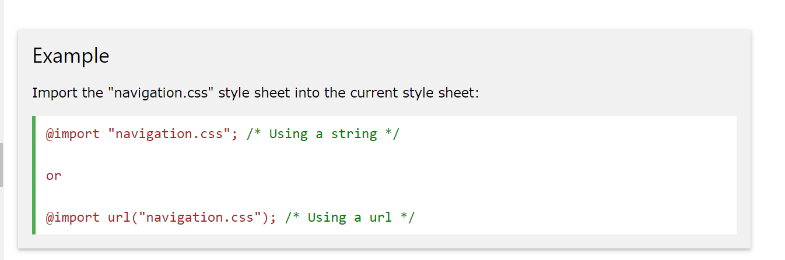

- The @import rule allows you to import a style sheet into another style sheet.
- The @import rule must be at the top of the document (but after any @charset declaration).
- The @import rule also supports media queries, so you can allow the import to be media-dependent.
Here's is an example:
